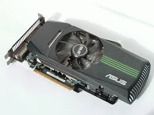

Grafikkort
Grafikkortet matar ut bildsignalen till bildskärmen, om man ska spela på datorer så vet alla att datorn måste ha ett bra grafikkort. Självklart så finns det vissa spel som inte behöver bra grafikkort men för att få bra bildkvalité när man spelar då är det smart att köpa ett bra grafikkort som exempelvis Nvidia Geforce GTX. Ibland används istället en integrerad grafikkrets som sitter antingen i processorn eller på moderkortet detta är vanligast i billiga datorer.